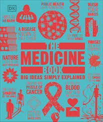

📖《DK医学百科》全面介绍了医学的发展历程，从古代的草药医学到现代的基因治疗，从希波克拉底的誓言到人工智能辅助诊断。书中涵盖了医学史上的重要里程碑、关键发现和突破性技术。
DK标志性的图文结合风格，让复杂的医学概念变得易于理解，是了解医学历史和现代医疗技术的理想入门读物。
还没有看完，不过里面的信息非常全面，作为学习医学的历史还是很有趣的。
这本书让我对医学有了全新的认识。从古埃及的木乃伊制作到中国的针灸，从文艺复兴时期的解剖学到现代的器官移植，医学的发展史就是人类不断探索自身奥秘的历史。每一个突破背后都有无数医生和科学家的努力，有的甚至付出了生命的代价。
特别有趣的是书中介绍的医学观念的演变。曾经被认为是"万能药"的放血疗法，现在看来荒谬可笑，但在当时却被奉为圭臬。这让人思考：今天的医疗技术，在几百年后的人们看来，会不会也有类似的感慨？医学是一门不断自我修正的科学，这种谦逊和开放的态度，正是它最迷人的地方。